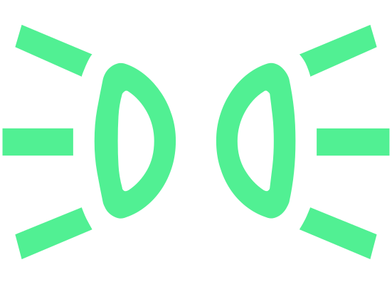

Commutateur d'éclairage

Sélectionner le mode d'éclairage
Appuyer plusieurs fois sur le commutateur
 .
.

Allumer/éteindre l'éclairage mauvais temps Feux de mauvais temps
Allumer/éteindre le feu antibrouillard arrière Antibrouillard arrière


Modes d’éclairage
Mode automatique

s’allume dans la commande. Si les feux de croisement s’allument aussi automatiquement, les symboles

et s’allument également dans la commande.Mode feux de croisement

s’allume dans la commande.
Mode feux de stationnement

s’allume dans la commande.
Éteindre les feux


Les informations sur le mode sélectionné est brièvement affiché sur l’écran du combiné d’instruments.
Si le véhicule roule à une vitesse supérieure à 10 km/h ou sur une distance supérieure à 100 m, les modes feux de stationnement et désactivation des feux ne sont pas disponibles.